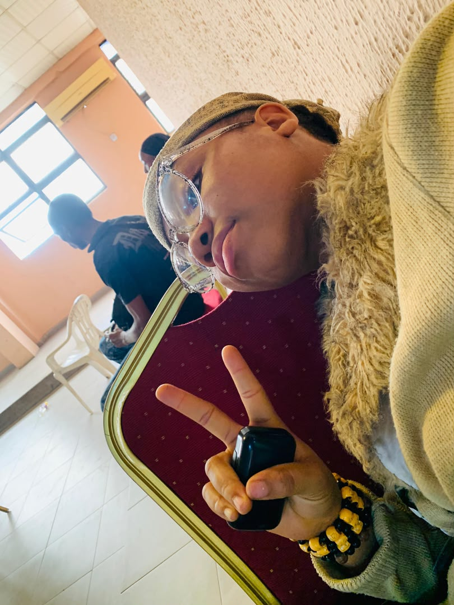

Cherish: The Joy You Left in My Heart
Cherish, if I close my eyes and remember the days we talked, I remember a warmth that had no price. Your words could turn an ordinary day into something worth smiling about. You had a way of making me feel seen, listened to, and genuinely happy. Our conversations were not always long, but they were beautiful because they were real.
You taught me lessons that I may not have recognized at the time. From you, I learned the beauty of patience, the importance of paying attention, and the courage it takes to be honest. You showed me that a genuine conversation can carry more life than a thousand empty words. Because of you, I came to understand that people are treasures: "For where your treasure is, there will your heart be also" (Matthew 6:21, KJV).
The Bible describes love beautifully: "Charity suffereth long, and is kind" (1 Corinthians 13:4, KJV). I see that truth differently now. You made kindness feel easy, even in moments when life was not simple. You gave me laughter, comfort, and a reason to look forward to another conversation. I may not have said it enough, but talking to you made me happier than you may ever know.

I learned that love is not only spoken in grand declarations. It is found in listening, remembering the little things, speaking gently, and choosing to understand one another. "Let all that ye do be done with charity" (1 Corinthians 16:14, KJV). That lesson means even more to me now. If love is given a second chance to grow, it should grow in kindness, patience, and truth.
Cherish, I think of you not only with regret, but with gratitude. I am grateful for the laughs we shared, the things you taught me, and the person you helped me become. Romans 12:10, in the King James Version, says, "Be kindly affectioned one to another." It is a simple instruction, yet it holds a tender truth: affection should be expressed with kindness.
If there is ever a day when you choose to speak to me again, I would like to listen more closely. I would like to remember that your heart is precious, your thoughts are worthy, and your happiness matters. Songs of Solomon 4:7 tells us, "Thou art all fair, my love; and there is no spot in thee." It is a beautiful reminder that someone can be cherished not for perfection, but for the whole and unique person they are.
I do not know what tomorrow will bring, but I know what the past gave me: a woman who made ordinary conversations feel special, taught me lessons I still carry, and filled moments of my life with joy. Whatever is ahead, I will always be thankful that I got to know you. And if we ever find our way back to a conversation, I hope it begins with a smile and ends with the kind of peace that love is meant to bring.
Continue the conversation on WhatsApp: 07047338177